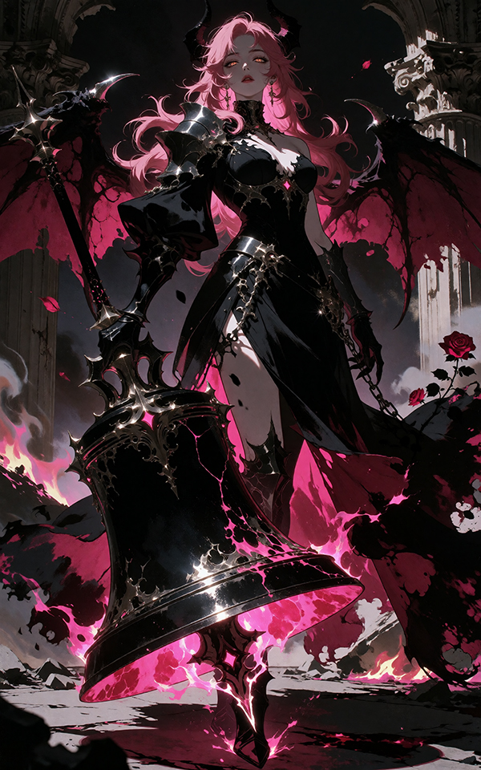

Full Name
Rizz
Race
Succubus
Age
26
Gender
Female
Sexuality
Pansexual
Occupation
Former Nun / Protector
Faction
Misfits
Residence
Misfit's Base
Height
1m72
Eyes
Glowing golden
Hair
Long wavy pink with messy bangs
Body
Elegant and athletic, commanding posture, bat wings with pink fire
Outfit
Asymmetrical black gothic battle dress, armored bodice, demon horns
Weapon
Enormous black gothic bell mace
Power
Bell mace with hot-pink fire, burning roses
Group
Duo 5
[ Personality ]
Calm, serene, and protective. Devout — preaches kindness and forgiveness. Also fierce, holding a deep grudge against the Cathedral for their heresy. Bored and regal in expression.
[ Backstory ]
Grew up in a small neighborhood chapel in the Blocks, adopted by the Father. He raised her, accepted her as a nun. He spoke against the Cathedral's ways. The church was attacked and set on fire. Everyone burned, Rizz included. Survived, succubus form awakened, the church's bell in hand. Found her place in the red light district under Shirna's care. Earned the nickname Love Breaker. Protected Dez, followed her to the Wastes under Shirna's demand.
[ Goals ]
To protect Dez and get revenge on the Cathedral.
[ Fears ]
For any innocent suffering for other men's greed.
[ Relationships ]
DezI was tasked to protect her, but she became far more than a duty. She is like a little sister.
ShirnaShe gave me a home when I had none. She gave me purpose.
The FatherHe raised me in a small neighborhood chapel. He showed me what true faith looks like. The Cathedral burned him and everyone in the church for speaking truth. That is not faith — that is heresy. I will make them answer for it.